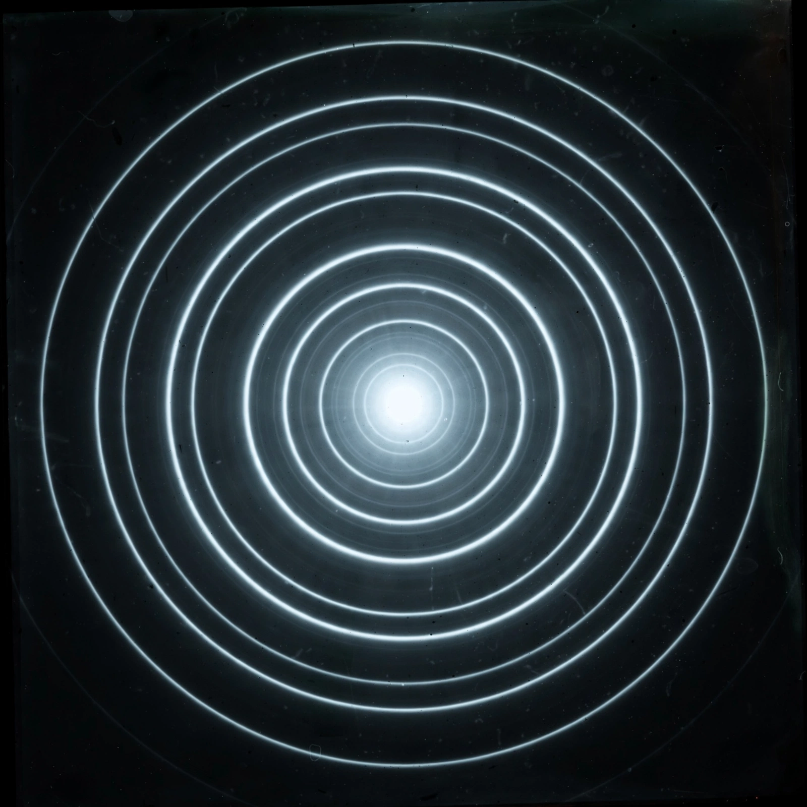

| Demonstrated | 1927 (Davisson & Germer; G. P. Thomson) |
|---|---|
| Basis | De Broglie wavelength of the electron |
| Used in | TEM, LEED, RHEED, gas-phase structure determination |
Electron diffraction is a technique used to study matter by firing a beam of electrons at a sample and observing the resulting interference pattern. By the wave–particle duality predicted by Louis de Broglie in 1924, electrons behave as waves with a wavelength inversely proportional to their momentum, so a beam diffracts from the regular array of atoms in a crystal in the same way as X-rays, according to Bragg's law.
The phenomenon was demonstrated experimentally in 1927 in two independent experiments: Clinton Davisson and Lester Germer at Bell Labs observed diffraction from a nickel crystal, and George Paget Thomson passed electrons through thin films and observed rings. Davisson and Thomson shared the 1937 Nobel Prize in Physics. The experiments were a decisive confirmation of wave–particle duality.
Because electrons interact with matter far more strongly than X-rays, electron diffraction works with tiny samples and thin films. It is integral to transmission electron microscopy (TEM), where selected-area diffraction reveals crystal structure, orientation and defects. Surface science uses low-energy electron diffraction (LEED) and reflection high-energy electron diffraction (RHEED) to monitor surfaces and crystal growth. Gas electron diffraction determines the molecular structures of free molecules, and since the 2010s, three-dimensional electron diffraction (MicroED) has solved structures of small crystals of proteins and pharmaceuticals too small for X-ray crystallography.